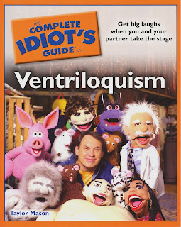

The best ever!
5/18/2010
{kind=link}

The Complete Idiot's Guide to Ventriloquism by Taylor Mason
I've skimmed this entire huge 300 page book, and now am working my way through the pages reading them carefully word for word, and I'm absolutely AMAZED! This book by Taylor Mason is, without question, the BEST book on the subject of ventriloquism that I have ever read! And I think I have read all, or nearly all, that have been published in the last century.
If the publisher, Alpha books, does the proper job of marketing and distribution of Taylor's book, I predict it will prove to be to the next generation of ventriloquists what Paul Winchell's Ventriloquism For Fun & Profit was to mine.
The first section of the book teaches the novice how to become a ventriloquist. But fully two-thirds of the book is PACKED with suggestions on how to improve a vent act, create dialogues and complete shows, and how to market same. When my dwindling supply of Maher Courses has been sold out, this is the learning tool I'll recommend seeking ventriloquists. Yes, it's that good and complete. How it can be sold for a measly $18.95 retail, I'll never know. The only "idiot" is the person who says they want to be a better ventriloquist and delays buying the book! It is absolutely a must read for all vents and aspiring vents. I'd have given anything (almost) to get my hands on a book like this when I was starting out. Inclusive , inspiring and invaluable!
I don't sell it, but you can purchase it from Amazon (where it is being sold for the ridiculously low discounted price of only $11.95!). If you purchase this book, and don't feel it's worth every cent you paid, return it to ME and I'LL refund your money! :-)